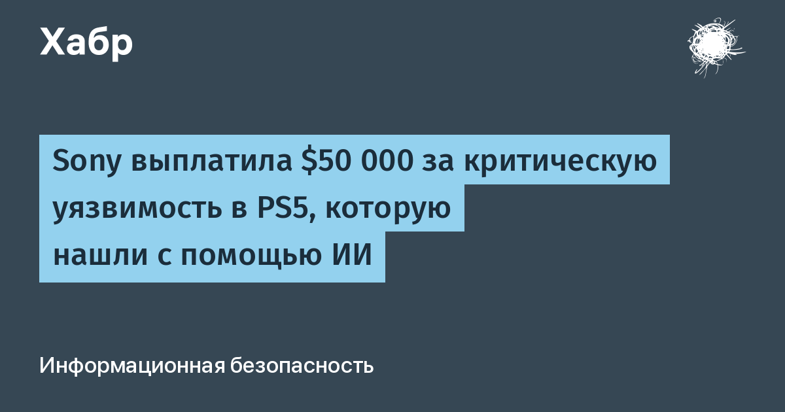

Речь о баге гипервизора — слое, который стоит под ядром консоли. Его использование даёт выполнение кода на уровне ядра, а значит, например, загрузку Linux на PS5. Уязвимость затрагивает прошивки с 13.60 по 14.00. Jordy сообщил о ней через программу Sony на HackerOne и получил верхнюю планку вознаграждения — $50 000, которую Sony платит только за критические случаи. Вскоре после сообщения Sony выпустила обновление и закрыла дыру.
Этот же баг ещё в 2025 году нашёл security-инженер Google Энди Нгуен (theflow0). Он сознательно держал находку в секрете: он планировал выпустить запуск Linux на PS5 к релизу GTA 6 — консоль требует свежую прошивку и вход в PSN, и незакрытая дыра позволила бы играть в новинку и запускать Linux одновременно. Jordy сначала согласился не сообщать Sony, но когда ту же уязвимость обнаружил ещё один исследователь — тоже через LLM, он сдал баг: «Если я и ещё один человек смогли найти её с помощью LLM, это сможет сделать кто угодно». Нгуен в ответ объявил, что уходит из PS5-сцены и сворачивает работу над PS5 Linux, обозвав новых первооткрывателей «новичками с LLM, которые пишут хаки, не понимая, как они работают».
Эксперты по инфобез называют октябрь «чёрным»: резкий рост числа раскрытых уязвимостей связывают с массовым прогоном кода продуктов через большие языковые модели. Если раньше редкий баг гипервизора мог годами оставаться в руках одного человека, теперь одну и ту же дыру независимо друг от друга находят несколько людей за недели. Для вендоров это смена правил игры: время жизни неопубликованной критической уязвимости сжимается, и «беречь» её в тишине становится бессмысленно.
Sony уже выпустила патч — владельцам PS5 на прошивках 13.60–14.00 стоит обновиться, особенно тем, кто ждёт GTA 6 19 ноября: для игры нужен актуальный системный софт. Выбор для тех, кто хотел Linux: остаться на старой прошивке без PSN-подключения (с сохранённой уязвимостью) или обновиться под GTA 6, потеряв эту возможность. Отдельного официального анонса Sony не было — история опубликована через интервью IGN и программу баг-баунти на HackerOne.